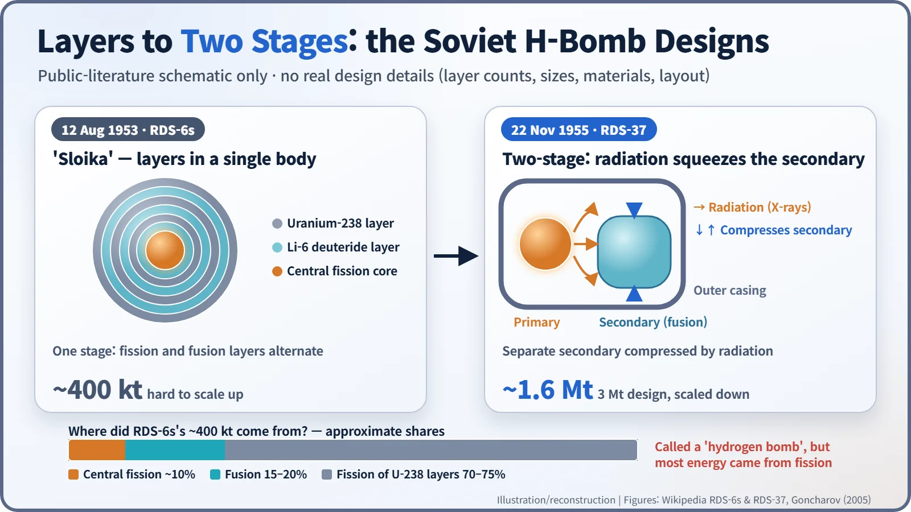
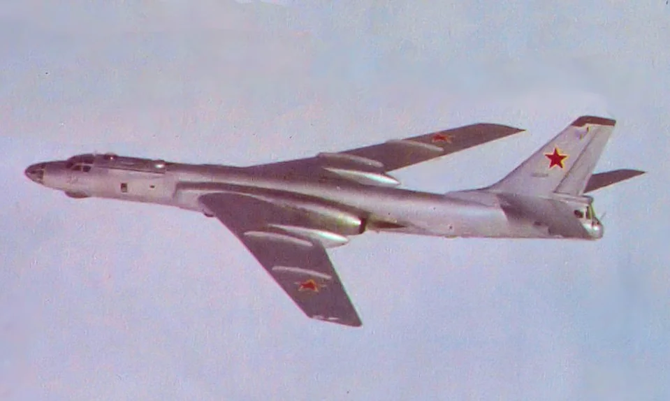
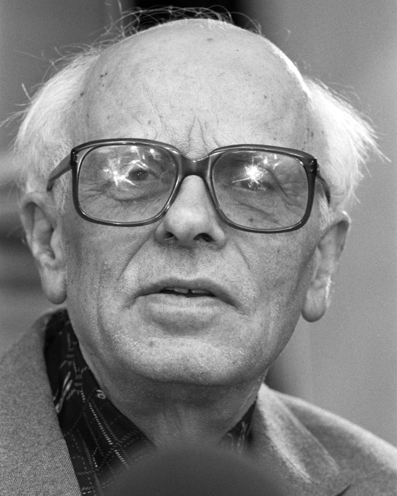
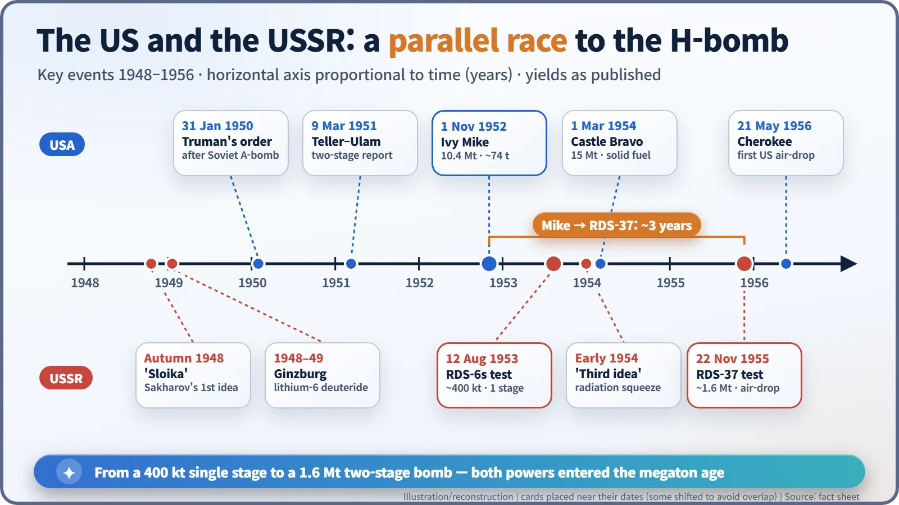

Nuclear History · 146
From a Layer Cake to the Megaton Age — the Soviet Hydrogen Bombs RDS-6s (1953) and RDS-37 (1955)
A 400-kiloton 'layer cake' that could not grow, a 'third idea' in 1954, and a 1.6-megaton bomb dropped from a Tu-16.
On 12 August 1953 the Soviet Union tested RDS-6s, a "layer cake" (sloika) design that yielded about 400 kilotons but drew only 15–20% of its energy from fusion and could not be scaled up. On 22 November 1955 it air-dropped RDS-37, its first true two-stage hydrogen bomb, at about 1.6 megatons. The physicist behind both, Andrei Sakharov, later became one of the best-known critics of nuclear testing.
A pastry with a dangerous name
Walk into a Russian bakery and you may find a sloika: a puff pastry made by folding dough and butter over and over until it bakes into dozens of flaky layers. In the late 1940s, Soviet physicists gave that friendly name to something far less friendly — their first design for a hydrogen bomb.
This is the story of how far that "layer cake" got in 1953, and why, two years later, the Soviet Union tested a bomb built on a completely different principle. It stays at the level of the published historical literature: broad principles and people's choices, not engineering details.
A 27-year-old's layer cake
On 10 June 1948 a decree of the USSR Council of Ministers set up a theoretical group on the hydrogen bomb at the Lebedev Physical Institute (FIAN) in Moscow, led by Igor Tamm (1895–1971). According to G. A. Goncharov, a historian at Russia's nuclear-weapons institute in Sarov, what prompted the group was intelligence on the American "Super" passed on by the German-born physicist Klaus Fuchs. [1]
That autumn, Tamm's former student Andrei Sakharov (1921–1989), then 27, proposed a new configuration: an atomic bomb at the centre, wrapped in alternating shells of uranium and fusion fuel. This was the sloika, later remembered as Sakharov's "first idea". Between late 1948 and early 1949, Vitaly Ginzburg (1916–2009) added a "second idea": use lithium-6 deuteride as the fusion fuel. Because it is a solid at room temperature, it removed the need for the huge refrigeration plant that liquid deuterium requires. [1] [3]
The logic was mutual encouragement between two kinds of nuclear reaction. Fission releases energy when heavy nuclei split; fusion releases energy when light nuclei join. The exploding core heats and squeezes the surrounding layers enough for some fusion, and the fast neutrons from that fusion split still more uranium-238 in the outer layers.
August 1953: 400 kilotons called a "hydrogen bomb"
The Soviet Union was in upheaval. Stalin died on 5 March 1953, and on 26 June Lavrentiy Beria, who had overseen the atomic project, was arrested. On 8 August Premier Georgy Malenkov told the Supreme Soviet, in substance, that the United States no longer had a monopoly on the hydrogen bomb (the exact wording differs between translations). Four days later, on 12 August 1953, RDS-6s was fired on a tower at the Semipalatinsk test site in Kazakhstan. American analysts called it "Joe-4".
Its yield was about 400 kilotons, more than ten times the roughly 22 kilotons of the first Soviet atomic bomb. But the energy budget tells a more modest story. Published estimates put the fusion share at only about 15–20%; most of the energy came from fission, mainly of the uranium-238 layers. [2] [3]

A cake that could not grow
Moscow announced RDS-6s as a hydrogen bomb, and AEC chairman Lewis Strauss acknowledged that the test had involved both fission and thermonuclear reactions. Russian accounts still describe it as the first hydrogen bomb tested in the form of a usable bomb — not an empty claim, since the American Ivy Mike device of nine months earlier weighed about 74 tonnes with its cooling equipment and could not be carried by any aircraft.
Western historians, on the other hand, generally do not count RDS-6s as a "true" hydrogen bomb. However many layers you add, the central explosion cannot squeeze the outer ones hard enough, so the design could not be scaled up to megatons. Soviet designers reached the same conclusion: an upgraded version was judged unworkable, and by the end of 1953 the effort turned elsewhere. The two verdicts differ mainly in what they mean by "hydrogen bomb". [2] [3]
The "third idea"
The breakthrough came in early 1954. Theorists at the design bureau KB-11, led by Sakharov and Yakov Zeldovich (1914–1987), concluded that radiation (X-rays) from a primary atomic explosion, trapped inside a casing, could compress a separate secondary charge of fusion fuel evenly from all sides. Official papers called it the "encirclement principle"; Sakharov's memoirs call it the "third idea". It was the same principle as the American Teller–Ulam configuration.
Goncharov argues that Fuchs's 1948 material already contained hints of radiation implosion, but that Soviet scientists did not grasp its core until 1954 and found the two-stage design independently. A summary report of mid-1955 was titled "Test device for verifying the encirclement principle" and estimated its yield at 600–1,400 kilotons. [1]
22 November 1955: a two-stage bomb dropped from the sky
The first attempt, on 20 November, was called off because of cloud. According to Sakharov's memoirs, the bomber then had to land with the bomb still on board, on an icy runway. [2]
Two days later a Tupolev Tu-16 flown by F. P. Golovashko dropped RDS-37. It burst about 1,550 m above the ground with a yield of about 1.6 megatons — deliberately reduced, for safety, from a design of roughly 3 megatons. It was the world's first air-dropped two-stage thermonuclear test; the first American air-drop of a hydrogen bomb came the following May. [1] [3]

Goncharov, then a young theorist watching from about 32 km away, recalled seeing the shock wave cross the steppe about a minute and a half later. The yield matched the calculations, but a temperature inversion bent the shock wave back towards the ground, and the blast felt on the surface was several times stronger than predicted. A young soldier died when a trench collapsed, and a two-year-old girl died when a shelter collapsed in a nearby settlement. Dozens more were injured (42 to 47, depending on the source). [1] [2] [3]
A toast, and a "feeling of complicity"
At the banquet that evening Sakharov proposed the first toast: "May all of our devices explode as successfully as today's, but always over test sites and never over cities." A senior officer replied with a crude parable, which Sakharov took to mean that how the weapon was used was not for the scientists to decide. Of the two deaths he later wrote: "I did not hold myself personally responsible for their deaths, but I could not escape a feeling of complicity." [2]

In 1956 Sakharov, Zeldovich, Igor Kurchatov and Yulii Khariton received the Lenin Prize, and more than 2,400 people were decorated. Sakharov, though, began to speak publicly about the dangers of fallout from atmospheric testing, became a human-rights campaigner, and received the 1975 Nobel Peace Prize. Barred from travelling, he could not attend; his wife, Yelena Bonner, accepted on his behalf. [1]

About three years separated Ivy Mike and RDS-37. Both powers found that the way forward was not "pile on more layers" but "compress first", and with that the arms race entered the megaton age. The irony is that the designer who turned away from the layer cake's dead end would later become one of the best-known voices calling for an end to nuclear testing.